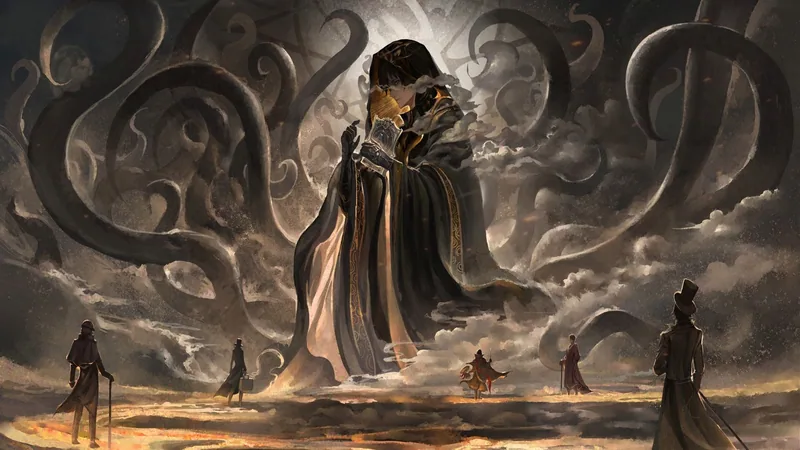

THE OMNIARCH
All Peak Fiction Is Meant To Be Appreciated. curator of peak fiction — theomniarch.com.ng
A translation rendered
with reverence and rigour
The Reverend Insanity translation, suspended since 2019, is here restored with meticulous fidelity to Gu Zhen Ren's philosophical architecture. This archive is presented with formal clarity, for the discerning reader who seeks precision over platitude.
The path of Gu
is the path of
refinement
Fang Yuan's journey is not one of heroism, but of perseverance against fate. Through the Spring Autumn Cicada, five hundred years are reversed — and with them, the very essence of heaven and earth. Gu are not mere instruments; they are the embodiment of laws, emotions, and destinies.
Three chapters are presently typeset, with Volume I, “The Demonic Nature Never Changes,” at the bench. Each passage is weighed with care, that the original's gravity and nuance may endure. The work proceeds not with haste, but with devotion.
For those who discover this archive by chance — welcome. May you find here a measured and elegant rendering.

A door to Ren Zu
Four parables are presented here with discretion; the remaining forty reside within the live Reader, where audio narration and the Daoist Codex await.
Works of enduring stature
— enter to view their worlds
Each volume, upon selection, unfolds into an engineered lineage — characters, relations, and appraisals, presented with architectural precision. The rating resides at the root; the lineage spreads beneath.


INSANITY
Reverend Insanity — Nine Visions
Centre-cropped, expanded, watermark-free. Each card slides in the library — tap to enter its world, with animated lore inside.
Portfolio
The horizontal plane yields, acknowledging the gilt card at its centre — a portal to a forthcoming world. The author shall craft a dedicated site therein.
Enter Portfolio →Peak Fiction
Helix
A helical track, spaced with precision — no clustering, no central rod. Drag to traverse, scroll to ride.
Video Archive
Channels of convergence
Each platform is conceived as a distinct world — not an iconographic afterthought. Containers and pages for each.